山寺霊園/山形県
山形県屈指の死者供養の聖域、山寺（立石寺）へ出かけた時のことだ。
門前の土産物屋が並ぶ通りの奥に霊園があった。
ついつい車で迷い込んでしまった訳だが、そのままＵターン出来ない「何か」を感じたので見学させてもらうことにした。
霊園は山寺霊園という名前だが、山寺（立石寺）とは直接関係ないようだ。
墓地の入り口には水子地蔵が並んでいて、普通の霊園の割には水子地蔵が多いなあ、といった印象。
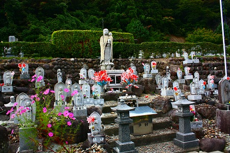
お墓自体はまあ、この地方の平均的な趣だし、まあ、こんな感じか。と車に戻ろうとしたのだが…。
どうしても奥の方にあるこの小屋が気になって仕方がない。
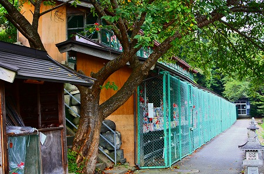
網が張ってあるので最初は鳥小屋かウサギ小屋のようなものだろう、と思ったのだが、よく考えてみたら霊園にそんなものがあるだろうか？
いや、ないよね。
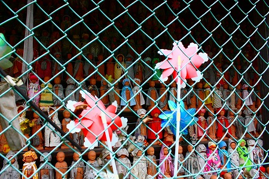
不思議に思って近づいて見たら中にはおびただしい数の人形がズラリと並んでいるではないか！
うわっ！何じゃこりゃあ！
多くの風車、お手製の衣装…これが水子地蔵であると認識できるまでには1秒もかからなかったが、それにしてもこの鳥小屋みたいな状態は何だ？何で金網？
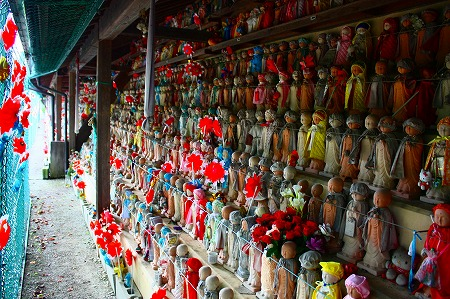
扉が開いていたので中に入れさせてもらった。
それにしても凄い数だ。
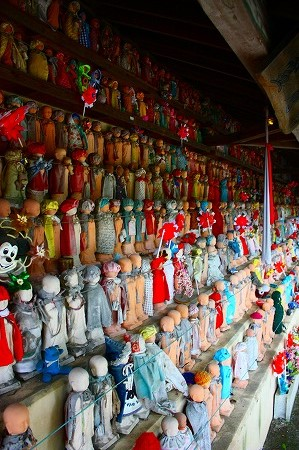
人形は雛壇にキチンと並べられており、整然としている。ように見える。
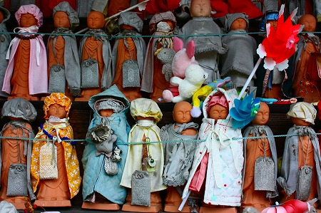
しかし一体一体にお手製の衣装が施されており、奉納者が込めた念の強さが伺える。
さらに奥には水子を供養する地蔵堂が。
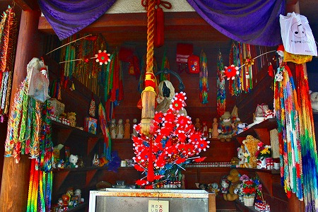
中は千羽鶴や小さな地蔵、オモチャなどが密集していた。
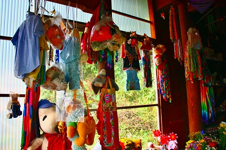
死んだ子供が賽の河原で困らないように、という気遣いだろうか、子供服もたくさん奉納されていた。
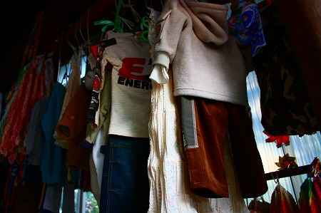
たくさんの人形や玩具。
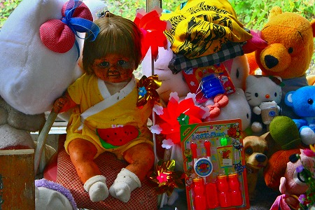
中でも年期モノの人形が異彩を放っていた。
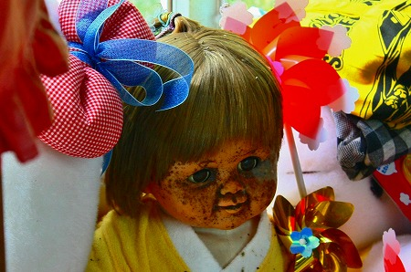
先ほどの鳥小屋のような建物に二階があったので登らせてもらう。
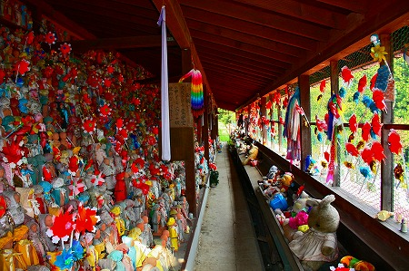
ああ、こちらも凄い密度だ。
山寺も死者供養の山として濃密な雰囲気を醸しだしてはいるが、ここほどストレートに感情が表出されてはいまい。
水子供養とこの地方の死者供養というファクターが重なって濃密さが二乗されたような感じだ。
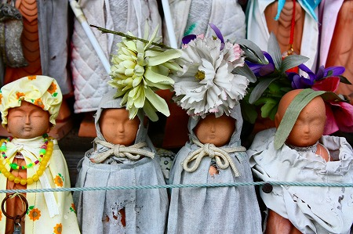
しかもこの人形、目鼻のエッジが凄く曖昧で、今にも消えてしまいそうな表情。
まさに水子地蔵にはぴったりなのだが、それだけに何ともやりきれない思いが伝わってくる。
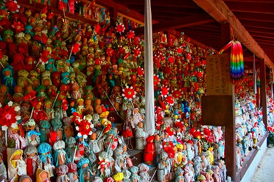
儚すぎる命に対して、せめて何らかの形で痕跡を残そう、という想いから生まれた光景なのだろう。
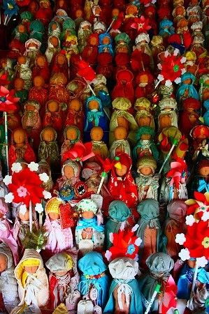
人はいつか死ぬ。
大往生と言われる人生もあれば志半ばで死ぬ人生もある。
残念ながらこればかりは（自死以外は）如何ともしがたい。
でも最低限願うならば、自分が生きた痕跡のようなものを少しでも残してからあの世に行きたいものだねえ。
俺にとってはこのサイトかな。ま、死んだら消えちゃうけど。
その時は「故人サイト」に載せてもらおっと（笑）。
2009.09.
珍寺大道場 HOME